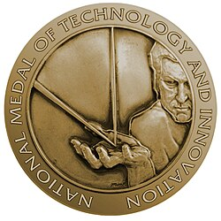
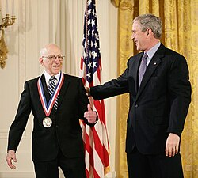

| National Medal of Technology and Innovation | |
|---|---|
 3 | |
| Description | Outstanding contributions to the Nation’s economic, environmental and social well-being through the development and commercialization of technological products, processes and concepts; technological innovation; and development of the Nation’s technological manpower.[1] |
| Location | Washington, D.C. |
| Country | |
| Presented by | President of the United States |
| First award | 1985 |
| Website | http://www.uspto.gov/about/nmti/index.jsp |
Ribbon of the medal | |
{kind=link}
{kind=link}
The National Medal of Technology and Innovation (formerly the National Medal of Technology) is an honor granted by the president of the United States to American inventors and innovators who have made significant contributions to the development of new and important technology. The award may be granted to a specific person, to a group of people or to an entire organization or corporation. It is the highest honor the United States can confer to a U.S. citizen for achievements related to technological progress.
History
The National Medal of Technology was created in 1980 by the United States Congress under the Stevenson-Wydler Technology Innovation Act. It was a bipartisan effort to foster technological innovation and the technological competitiveness of the United States in the international arena. The first National Medals of Technology were issued in 1985 by then-U.S. president Ronald Reagan to 12 individuals and one company.[2] Among the first recipients were Steve Jobs and Stephen Wozniak, founders of Apple Computer. The medal has been awarded annually until 2015.[2]
On August 9, 2007, President George Bush signed the America COMPETES (Creating Opportunities to Meaningfully Promote Excellence in Technology, Education, and Science) Act of 2007. The Act amended Section 16 of the Stevenson-Wydler Technology Innovation Act of 1980, changing the name of the Medal to the "National Medal of Technology and Innovation".[1]
Award process
{kind=link}

Each year the United States Patent and Trademark Office (previously the Technology Administration) under the U.S. Department of Commerce calls for the nomination of new candidates for the National Medal of Technology and Innovation. Candidates are nominated by their peers who have direct, first-hand knowledge of the candidates achievements. Candidates may be individuals, teams of individuals (up to 4), organizations or corporations. Individuals and all members of teams nominated must be U.S. citizens and organizations and corporations must be U.S.-owned (i.e. 50% of their assets or shares must be currently held by U.S. citizens).
All nominations are referred to the National Medal of Technology and Innovation Evaluation Committee, which issues recommendations to the U.S. secretary of commerce. All nominees selected as finalists through the merit review process will be subject to an FBI security check. Information collected through the security check may be considered in the final selection of winners. The Secretary of Commerce is then able to advise the President of the United States as to which candidates ought to receive the National Medal of Technology and Innovation. The new National Medal of Technology and Innovation laureates are then announced by the U.S. president once the final selections have been made.
Laureates
This article needs to be updated. (December 2024) |
As of 2005, there have been more than 135 people and 12 companies recognized. Summarized here is a list of notable laureates and a summary of their accomplishments.
| 1985 | Fred Brooks, Erich Bloch and Bob Evans | "For their contributions to the IBM System/360, a computer system and technologies which revolutionized the data processing industry…" |
| 1985 | Steve Jobs and Steve Wozniak | "For their development and introduction of the personal computer…" |
| 1985 | Marvin M. Johnson | "For his discovery and development of metal passivating agents for catalytic cracking catalysts…" |
| 1985 | Ralph Landau | "For his technical, leadership and entrepreneurial roles in the development of commercially successful petrochemical processes…" |
| 1985 | John T. Parsons and Frank L. Stulen | "For their development and successful demonstration of the numerically-controlled machine tool for the production of three-dimensional shapes…" |
| 1985 | Harold Rosen and Allen E. Puckett | "For their technological contributions and leadership in the initiation and development of geostationary communications satellites…" |
| 1985 | Joseph F. Sutter | "For his contributions to the development of the commercial airliner jet, the 747…" |
| 1986 | Bernard M. Gordon | "For his invention and development of D/A and A/D conversion…" |
| 1986 | Reynold B. Johnson | "For his invention and development of magnetic disk storage…" |
| 1986 | William Norris | "For the advancement of micro electronics and computer technology…" |
| 1986 | Frank Piasecki | "For the development of the tandem rotor helicopter (Flying Banana), the compound aircraft (an innovative VTOL design), and other contributions to vertical lift aircraft…" |
| 1986 | S. Donald Stookey | "For the invention of glass-ceramics, photosensitive glass, photochromic glass, and of photo-etchible glass…" |
| 1986 | Francis Versnyder | "For the development and application of directionally solidified and single crystal turbine components which improve fuel efficiencies and maintenance requirements for jet aircraft engines…" |
| 1987 | Joseph V. Charyk | "For employment of the concept of the geosynchronous communications satellite systems as the basis for a global telecommunications system,…" |
| 1987 | W. Edwards Deming | "For his forceful promotion of statistical methodology, for his contributions to sampling theory and for his advocacy to corporations and nations of a general management philosophy that has resulted in improved product quality with consequent betterment of products available to users as well as more efficient corporate performance." |
| 1987 | John E. Franz | "For his discovery of the herbicidal properties of glyphosates which have had significant consequences upon the production of agricultural food and fiber as well as upon agricultural practices throughout the world." |
| 1987 | Robert N. Noyce | "For his inventions in the field of semiconductor integrated circuits…" |
| 1988 | John L. Atwood | "For distinguished leadership, technical competence and integrity in the technological advancement of aviation and space travel." |
| 1988 | Arnold O. Beckman | "For exceptional creativity in designing analytical instruments" (spectrophotometry) |
| 1988 | Paul M. Cook | "For his vision and entrepreneurial efforts, his technical accomplishments and his business and technical leadership as the key contributor in creating a worldwide chemically based industry." |
| 1988 | Raymond Damadian and Paul C. Lauterbur | "For their independent contributions in conceiving and developing the application of magnetic resonance technology to medical uses including whole body scanning and diagnostic imaging." |
| 1988 | Robert H. Dennard | "For invention of the basic one-transistor dynamic memory cell used worldwide in virtually all modern computers." |
| 1988 | Harold Eugene Edgerton | "For the invention of the electronic stroboscopic flash and for finding a multitude of applications for it within science, technology and industry." (stroboscope) |
| 1988 | Clarence Johnson | "For his outstanding achievements in the design of a series of commercial, military, and reconnaissance aircraft that incorporated a wide range of technological advancements, and for his innovative management techniques which helped develop and produce these aircraft in record time and at a minimum cost." |
| 1988 | Edwin H. Land | "For the invention, development and marketing of instant photography." |
| 1988 | David Packard | "For extraordinary and unselfish leadership in both industry and government, particularly in widely diversified technological fields…" |
| 1989 | Herbert W. Boyer and Stanley N. Cohen | "For their fundamental invention of gene splicing techniques … and discovery of recombinant DNA technology" |
| 1989 | Jay Wright Forrester and Robert Everett | "For their work in real-time computer technologies and applications." |
| 1989 | Helen T. Edwards, Richard A. Lundy, J. Ritchie Orr and Alvin V. Tollestrup | "For their contributions to the design, construction and initial operation of the Tevatron particle accelerator" |
| 1990 | John Atanasoff | "For his invention of the electronic digital computer…" |
| 1990 | Marvin Camras | "For the development and commercialization of magnetic recording…" |
| 1990 | The DuPont Company | "For pioneering the development and commercialization of high-performance man-made polymers such as nylon, neoprene rubber, "Teflon" fluorocarbon resin, and a wide spectrum of new fibers, films, and engineering plastics which have strengthened America's global competitiveness and benefited humankind." |
| 1990 | Donald N. Frey | "For his management of a wide range of commercial applications of new technology while serving as a senior executive in different industries; and for subsequent teaching and research, as a Professor of Industrial Engineering and Management Science, on the principles of technology commercialization." |
| 1990 | Fred W. Garry | "For the design, manufacture and commercialization of high performance jet engines that lead the world in performance, efficiency, life-cycle cost, and minimal environmental impact…" |
| 1990 | Wilson Greatbatch | "For invention, development and introduction into clinical usage of the implantable cardiac pacemaker resulting in saving over two million lives." |
| 1990 | Jack Kilby | "For his invention and contributions to the commercialization of the integrated circuit and the silicon thermal print-head; for his contributions to the development of the first computer using integrated circuits; and for the invention of the hand-held calculator, and gate array." |
| 1990 | John S. Mayo | "For providing the technological foundation for information-age communications, and for overseeing the conversion of the national switched telephone network from analog to a digital-based technology for virtually all long-distance calls both nationwide and between continents." |
| 1990 | Gordon Moore | "For his seminal leadership in … large-scale integrated memory and the microprocessor…" |
| 1990 | David Pall | "For patenting and commercializing over 100 filtration and other fluid clarification products which have contributed significantly to society in safety of flight…" |
| 1990 | Chauncey Starr | "For his original contributions to energy production and policy; for pioneering in nuclear power; for developing risk assessment and risk management concepts; for organizing the Electric Power Research Institute, a consortium; for leadership in engineering education and contributions to a technically trained U.S. work force." |
| 1991 | Stephen Bechtel, Jr. | "For his outstanding leadership in the engineering profession with special recognition for his contributions to the development and application of advanced management techniques to world-class industrial projects." |
| 1991 | Gordon Bell | "For his continuing intellectual and industrial achievements in the field of computer design; and for his leading role in establishing cost-effective, powerful computers which serve as a significant tool for engineering, science and industry." |
| 1991 | Geoffrey Boothroyd and Peter Dewhurst | "For their concept, development and commercialization of Design for Manufacture and Assembly (DFMA)…" |
| 1991 | John Cocke | "For his development and implementation of Reduced Instruction Set Computer (RISC) architecture that significantly increased the speed and efficiency of computers, thereby enhancing U.S. technological competitiveness." |
| 1991 | Carl Djerassi | "For his broad technological contributions to solving environmental problems; and for his initiatives in developing novel, practical approaches to insect control products that are biodegradable and harmless." |
| 1991 | James Johnson Duderstadt | "For his excellence in the development and implementation of strategies for engineering education; and for his successes in bringing women and minorities into the Nation's technological work force." |
| 1991 | Bob Galvin | "For advancement of the American electronics industry through continuous technological innovation, establishing Motorola as a world-class electronics manufacturer." |
| 1991 | Rear Admiral Grace Hopper | "For her pioneering accomplishments in the development of computer programming languages that simplified computer technology and opened the door to a significantly larger universe of users." |
| 1991 | F. Kenneth Iverson | "For his concept of producing steel in minimills using revolutionary slabcasting technology that has revitalized the American steel industry." |
| 1991 | Frederick McKinley Jones and Joseph A. Numero | "For … development of refrigeration technology … which revolutionized the preservation and distribution of food and other perishables…" |
| 1991 | David W. Thompson, Antonio L. Elias, David S. Hollingsworth and Robert R. Lovell | "For their invention, development, and production of the Pegasus rocket, the world's first privately developed space launch vehicle, that has opened the door to greater commercial, scientific and defense uses." |
| 1991 | Charles E. Reed | "For his management risk-taking in continuous innovation leading General Electric Company to world-class production of advanced engineering materials." |
| 1991 | John Stapp | "For his research on the effects of mechanical force on living tissues leading to safety developments in crash protection technology for automobiles, aircraft, trains, manned space flight and other modes of transportation." |
| 1992 | Bill Gates | "For his early vision of universal computing at home and in the office…" |
| 1992 | Walter Lincoln Hawkins | "For his invention and contribution to the commercialization of long-lived plastic coatings for communications cable that has saved billions of dollars for telephone companies around the world…" |
| 1992 | Joseph M. Juran | "For his lifetime work of providing the key principles and methods by which enterprises manage the quality of their products and processes, enhancing their ability to compete in the global marketplace." |
| 1992 | Charles Kelman | "For his innovations in cataract surgical technology resulting in reduced rehabilitation time for millions of Americans, significant savings, and the creation of a new industry." |
| 1992 | Merck & Co. | "For sustained innovation focusing on the discovery, development and worldwide commercialization of superior human and animal health products while maintaining proper concern for the environment." |
| 1992 | Delbert H. Meyer | "For his discovery of the process for making purified terephthalic acid (PTA)…" |
| 1992 | Paul B. Weisz | "For his basic discoveries and management in the field of zeolite catalysis…" |
| 1992 | Norman Joseph Woodland | "For his invention and contribution to the commercialization of bar code technology which improved productivity in every industrial sector and gave rise to the bar code industry." |
| 1993 | Amos E. Joel, Jr. | "For his vision, inventiveness and perseverance in introducing technological advances in telecommunications…" |
| 1993 | William H. Joyce | "For his vision and entrepreneurial talents, along with his technology and business leadership, in creating and commercializing a process (UNIPOL) that revolutionized the production of plastics." |
| 1993 | George Kozmetsky | "For his commercialization of various technologies through the establishment and development of over one hundred technology-based companies that employ tens of thousands of people and export over one billion dollars worldwide." |
| 1993 | George Levitt and Marinus Los | "For their independent contribution to the discovery and commercialization of environmentally friendly herbicides to help ensure an abundant food supply for a growing world population." |
| 1993 | Hans W. Liepmann | "For his outstanding research contributions to the field of fluid mechanics and for his devotion for over 40 years to the education of the world's leaders in aeronautical engineering." |
| 1993 | William D. Manly | "For his outstanding success in the development and processing of advanced high-temperature and high-performance materials, and the transfer of this technology to a variety of American industries." |
| 1993 | Kenneth H. Olsen | "For his contributions to the development and use of computer technology." (Digital Equipment Corporation – DEC) |
| 1993 | Walter L. Robb | "For his leadership in the development and commercialization of new medical imaging technologies and related manufacturing initiatives…" |
| 1994 | AMGEN | "For its leadership in developing innovative and important commercial therapeutics based on advances in cellular and molecular biology for delivery to critically ill patients throughout the world." |
| 1994 | Corning Inc. | "For a series of technological innovations yielding a wide range of extraordinary products, from pollution control materials to space shuttle windows. For life changing and life enhancing inventions which made possible entire new industries – lighting, television and optical communications." |
| 1994 | Joel S. Engel and Richard H. Frenkiel | "For their fundamental contributions to the theory, design and development of cellular mobile communications systems." |
| 1994 | Joseph Gerber | "For his past and continuing technical leadership in the invention, development and commercialization of manufacturing automation systems for a wide variety of industries…" |
| 1994 | Irwin M. Jacobs | "For his development of Code Division Multiple Access (CDMA) as a commercial technology adopted as a U.S. digital cellular standard." |
| 1995 | Edward R. McCracken | "For his groundbreaking work in the areas of affordable 3D visual computing and super computing technologies; and for his technical and leadership skills in building Silicon Graphics, Inc., into a global advanced technology company."[3] |
| 1995 | Praveen Chaudhari, Jerome J. Cuomo, and Richard J. Gambino | "For the discovery and development of a new class of materials-the amorphous magnetic materials-that are the basis of erasable, read-write, optical storage technology, now the foundation of the worldwide magnetic-optic disk industry."[3] |
| 1995 | The Procter & Gamble Company | "For creating, developing and applying advanced technologies to consumer products which have strengthened the American economy while helping to improve the quality of life for millions of consumers worldwide."[3] |
| 1995 | 3M | "For its many innovations over decades, producing thousands of successfully commercialized products…"[3] |
| 1995 | Sam B. Williams | "For his unequaled achievements as a gifted inventor, tenacious entrepreneur, risk-taker and engineering genius in making the USA number one in small gas turbine engine technology and competitiveness, and for his leadership and vision in revitalizing the U.S. general aviation business jet and trainer jet aircraft industry." |
| 1995 | Alejandro Zaffaroni | "For his contributions to time released medicine and serial entrepreneurship in the field of biotechnology."[3] |
| 1996 | Ronald H. Brown | "For his vision of American global technological leadership, his tireless advocacy of research and development for economic growth and higher living standards for all, and his energetic efforts to champion the innovative spirit of the American people." |
| 1996 | Johnson & Johnson | "For a century of continuous innovation in research, development and commercialization of products that are critical in the management of disease, improvement of quality of life, reduction of health care costs and fostering of U.S. global competitiveness." |
| 1996 | Charles Kaman | "For his pioneering work in the field of rotary-wing flight, his unique capacity for successful technology transfer from defense to commercial use, and for fostering a corporate environment in which diverse technological achievements flourish and new businesses are created." |
| 1996 | Stephanie Kwolek | "For her contributions to the discovery, development and liquid crystal processing of high-performance aramid fibers (Kevlar)." |
| 1996 | James C. Morgan | "For his leadership of 20 years developing the U.S. semiconductor manufacturing equipment industry, and for his vision in building Applied Materials, Inc. into the leading equipment company in the world, a major exporter and a global technology pioneer which helps enable Information Age technologies for the benefit of society." |
| 1996 | Peter H. Rose | "For his vision and outstanding leadership in the development and commercialization of ion implantation products that make possible the manufacture of modern semiconductors; and for his success in establishing and maintaining U.S. global leadership in the implantation equipment industry." |
| 1997 | Vinton Cerf and Robert E. Kahn | "For creating and sustaining development of Internet Protocols." |
| 1997 | Norman Ralph Augustine | "For visionary leadership of the aerospace industry, for championing technical and managerial solutions to the many challenges in civil and defense systems, and for contributions to the United States world preeminence in aerospace." |
| 1997 | Ray Dolby | "For his inventions and for fostering their adoption worldwide through the products and programs of his company." |
| 1997 | Robert Ledley | "For pioneering contributions to biomedical computing and engineering, including inventing the whole-body CT scanner which revolutionized the practice of radiology, and for his role in developing automated chromosome analysis for prenatal diagnosis of birth defects." |
| 1998 | Denton Cooley | "For his inspirational skill, leadership, and technical accomplishments during six decades practicing cardiovascular surgery, including performing the first successful human heart transplant in the United States and the world's first implantation of an artificial heart…" |
| 1998 | Robert Fraley, Robert Horsch, Ernest Jaworski, and Stephen G. Rogers | "For their pioneering achievements in plant biology and agricultural biotechnology, and for global leadership in the development and commercialization of genetically modified crops to enhance agricultural productivity and sustainability." |
| 1998 | Ken Thompson and Dennis Ritchie | "For co-inventing the UNIX operating system and the C programming language which together have led to enormous advance to computer hardware, software and networking systems. And assimilated the growth of an entire industry thereby enhancing American leadership in the information age." |
| 1998 | Biogen, Inc. | "For its leadership in applying breakthroughs in biology to the development of lifesaving and life-enhancing pharmaceutical products designed to treat large, previously underserved patient populations throughout the world, including development of hepatitis B vaccines, the first vaccines using recombinant DNA technology." |
| 1998 | Bristol-Myers Squibb Company | "For extending and enhancing human life through innovative pharmaceutical research and development, and for redefining the science of clinical study through groundbreaking and hugely complex clinical trials that are recognized models in the industry." |
| 1999 | Glen Culler | "For pioneering innovations in multiple branches of computing, including early efforts in digital speech processing, invention of the first on-line system for interactive graphical mathematics computing and pioneering work on the ARPAnet." |
| 1999 | Ray Kurzweil | "For pioneering and innovative achievements in computer science such as voice recognition, which have overcome many barriers and enriched the lives of disabled persons and all Americans." |
| 1999 | Robert A. Swanson | "For his foresight and leadership in recognizing the commercial promise of recombinant DNA technology and his seminal role in the establishment and development of the biotechnology industry." |
| 1999 | Robert W. Taylor | "For visionary leadership in the development of modern computing technology, including computer networks, the personal computer and the graphical user interface." |
| 2000 | Douglas Engelbart | "For creating the foundations of personal computing including continuous, real-time interaction based on cathode-ray tube displays and the mouse, hypertext linking, text editing, on-line journals, shared-screen teleconferencing, and remote collaborative work. More than any other person, he created the personal computing component of the computer revolution." |
| 2000 | Dean Kamen | "For inventions that have advanced medical care worldwide, and for … awakening America to the excitement of science and technology." |
| 2000 | Donald Keck, Robert D. Maurer, and Peter C. Schultz | "For teaming up at the Corning Glass Corporation to co-invent low-loss fiber optic cable." |
| 2000 | IBM | "For…[being] the world's leader in basic data storage technologies." |
| 2001 | John A. Ewen | "For his basic discoveries and inventions in the field of metallocene catalysis which have revolutionized the production of polyethylene and polypropylene plastics, thereby enhancing American leadership and stimulating the growth of the entire industry." |
| 2001 | Arun Netravali | "For pioneering contributions that transformed TV from analog to digital, enabling numerous integrated circuits, systems and services in broadcast TV, CATV, DBS, HDTV, and multimedia over the Internet; and for technical expertise and leadership, which have kept Bell Labs at the forefront in communications technology." |
| 2001 | Sidney Pestka | "For pioneering achievements that led to the development of the biotechnology industry." |
| 2001 | Jerry Woodall | "For his pioneeriong role in the research and development of compound semiconductor materials and devices; for the invention and development of technologically and commercially important compound semiconductor heterojunction materials, processes, and related devices, such as light-emitting diodes, lasers, ultra-fast transistors, and solar cells." |
| 2001 | Dow Chemical Company | "For leadership in science and technology, for the vision to create great science and innovative technology in the chemical industry, and for the positive impact that commercialization of this technology has had on society." |
| 2002 | Calvin H. Carter | "For his exceptional contributions to the development of silicon carbide wafers." |
| 2002 | Carver Mead | "For his pioneering contributions to microelectronics that include spearheading the development of tools and techniques for modern integrated-circuit design, laying the foundation for fabless semiconductor companies, catalyzing the electronic-design automation field…" |
| 2002 | Carl D. Keith and John J. Mooney | "For the invention, application to automobiles, and commercialization of the three-way catalytic converter." |
| 2002 | M. George Craford, Russell Dean Dupuis, Nick Holonyak | "For contributions to the development and commercialization of light-emitting diode (LED) technology, with applications to digital displays, consumer electronics, automotive lighting, traffic signals, and general illumination." |
| 2002 | Haren S. Gandhi | "For his research, development, and commercialization of automotive exhaust catalyst technology, shaping the industry from its very beginning and continually pushing to improve the quality of the air we breathe." |
| 2003 | DuPont | "For policy and technology leadership in the phaseout and replacement of chlorofluorocarbons."[4] |
| 2003 | Jan D. Achenbach | "For his seminal contributions to engineering research and education and for pioneering ultrasonic methods for the detection of cracks and corrosion in aircraft, leading to improved safety for aircraft structures." |
| 2003 | Watts Humphrey | "For his vision of a discipline for software engineering, for his work toward meeting that vision, and for the resultant impact on the U.S. Government, industry, and academic communities." |
| 2003 | Robert Metcalfe | "For leadership in the invention, standardization, and commercialization of Ethernet." |
| 2003 | Rodney Bagley, Irwin Lachman, Ronald M. Lewis | "For their pioneering work resulting in the design and manufacture of the cellular ceramic substrate for catalytic converters that enabled auto manufacturers to develop the first commercially mass-produced automotive catalytic converter." |
| 2003 | UOP | "For more than 85 years of sustained technical leadership and innovation for the petroleum refining and petrochemical industries; and for the invention and commercialization of adsorbents, catalysts, process plants, and process technology." |
| 2003 | Wisconsin Alumni Research Foundation (WARF) | "For more than 75 years of support of the cycle of innovation, from research to invention to investment, by supporting faculty and student research at the University of Wisconsin and pioneering the transfer of university ideas to U.S. businesses." |
| 2004 | Ralph Baer | "For inventing the first video game console." |
| 2004 | Roger Easton, Sr. | "For his extensive pioneering achievements in spacecraft tracking, navigation and timing technology that led to the development of the NAVSTAR-Global Positioning System (GPS)."[5] |
| 2004 | Gen-Probe Incorporated | "For the development and commercialization of new blood- testing technologies and systems for the direct detection of viral infections, including direct identification of West Nile Virus and simultaneous identification of HIV-1 and Hepatitis C virus in plasma of human blood and organ donors prior to transfusion." |
| 2004 | IBM Microelectronics Division | "For four decades of innovation in semiconductor technology that has enabled explosive growth in both the information technology and consumer electronics industries through the development and fabrication of smaller, more powerful microelectronic devices." |
| 2004 | Industrial Light & Magic | "For 30 years of innovation in visual effects technology for the motion picture industry." |
| 2004 | Motorola | "For over 75 years of achievement and leadership in mobile communications, and for the development of innovative technologies that allow people to seamlessly connect with their world." |
| 2004 | PACCAR | "For pioneering efforts and industry leadership in the development and commercialization of aerodynamic, lightweight trucks that have dramatically reduced fuel consumption and increased the productivity of U.S. freight transportation." |
| 2005 | Ronald J. Eby, Maya Koster, Dace Viceps Madore and Velupillai Puvanesarajah | "For their work in the discovery, development and commercialization of Prevnar, the first-ever vaccine to prevent the deadly and disabling consequences of Streptococcus pneumoniae infections in children." |
| 2005 | Dean L. Sicking | "For his innovative design and development of roadside and race track safety technologies that safely dissipate the energy of high-speed crashes, helping prevent fatalities and injuries." |
| 2005 | Alfred Y. Cho | "For his contributions to the invention of the molecular beam epitaxy (MBE) technology and the development of the MBE technology into an advanced electronic and photonic devices production tool, with applications to cellular phones, CD players, and high-speed communications." |
| 2005 | Genzyme Incorporated | "For pioneering dramatic improvements in the health of thousands of patients with rare diseases and harnessing the promise of biotechnology to develop innovative new therapies." |
| 2005 | Semiconductor Research Corporation (SRC) | "For building the world's largest and most successful university research force to support the rapid growth and advance of the semiconductor industry." |
| 2005 | Xerox Corporation | "For over 50 years of innovation in marking, materials, electronics, communications, and software that created the modern reprographics, digital printing, and print-on-demand industries." |
| 2006 | Leslie A. Geddes | "For his contributions to electrode design and tissue restoration, which have led to the widespread use of a wide variety of clinical devices. His discoveries and inventions have saved and enriched thousands of lives and have formed the cornerstone of much of the modern implantable medical device field." |
| 2006 | Paul G. Kaminski | "For his contributions to national security through the development of advanced, unconventional imaging from space, and for developing and fielding advanced systems with greatly enhanced survivability. He has made a profound difference in the national security posture and the global leadership of the United States." |
| 2006 | Herwig Kogelnik | "For his pioneering contributions and leadership in the development of the technology of lasers, optoelectronics, integrated optics, and lightwave communication systems that have been instrumental in driving the growth of fiber optic transmission systems for our Nation's communications infrastructure." |
| 2006 | Charles M. Vest | "For his visionary leadership in advancing America's technological workforce and capacity for innovation through revitalizing the national partnership among academia, government, and industry." |
| 2006 | James West | "For co-inventing the electret microphone in 1962. Ninety percent of the two billion microphones produced annually and used in everyday items such as telephones, hearing aids, camcorders, and multimedia computers employ electret technology." |
| 2007 | Paul Baran | "For the invention and development of the fundamental architecture for packet switched communication networks which provided a paradigm shift from the circuit switched communication networks of the past and later was used to build the ARPANET and the Internet." |
| 2007 | Roscoe O. Brady | "For the discovery of the enzymatic defects in hereditary metabolic disorders such as Gaucher disease, Niemann–Pick disease, Fabry disease and Tay–Sachs disease, devising widely used genetic counseling procedures and development of highly effective enzyme replacement therapy that provided the foundation for patient treatment; and for stimulating the creation of and fostering the success of many biotechnology companies that now produce the therapeutics for the treatment of these diseases." |
| 2007 | David N. Cutler | "For having envisioned, designed and implemented world standards for real-time, personal and server-based operating systems for over 30 years, carrying these projects from conception through design, engineering and production for Digital Equipment Corporation’s RSX-11 and VAX/VMS and for Microsoft's Windows NT-based computer operating systems, and for his fundamental contributions to computer architecture, compilers, operating systems and software engineering." |
| 2007 | Armand V. Feigenbaum | "For leadership in the development of the economic relationship of quality costs, productivity improvement, and profitability and for his pioneering application of economics, general systems theory and technology, statistical methods and management principles that define the Total Quality Management approach for achieving performance excellence and global competitiveness. " |
| 2007 | Adam Heller | "For fundamental contributions to electrochemistry and bioelectrochemistry and the subsequent application of those fundamentals in the development of technological products that improved the quality of life of millions across the globe, most notably in the area of human health and well-being." |
| 2007 | Carlton Grant Willson | "For creation of novel lithographic imaging materials and techniques that have enabled the manufacturing of smaller, faster and more efficient microelectronic components that better the quality of the lives of people worldwide and improve the competitiveness of the U.S. microelectronics industry." |
| 2007 | eBay Inc. | "For pioneering the technology that encouraged and supported online trade, enabling global entrepreneurship and the growth of the Internet worldwide." |
| 2007 | Lockheed Martin Skunk Works | "For an exceptional 65-year record of developing cutting-edge aircraft, technologies, and systems solutions for the U.S. Government, including development of unique advanced aircraft technologies critical to the national defense; and for the introduction of operational “stealth” capability that has changed the landscape of U.S. war fighting capabilities." |
| 2008 | Forrest M. Bird | "For his pioneering inventions in cardiopulmonary medicine, including the medical respirator; devices that helped launch modern-day medical evacuation capabilities; and intrapulmonary percussive ventilation (IPV) technologies, which have saved the lives of millions of patients with chronic obstructive pulmonary disease and other conditions."[6] |
| 2008 | Esther Sans Takeuchi | "For her seminal development of the silver vanadium oxide battery that powers the majority of the world's lifesaving implantable cardiac defibrillators, and her innovations in other medical battery technologies that improve the health and quality of life of millions of people." |
| 2008 | John Warnock and Charles Geschke | "For their pioneering contributions that spurred the desktop publishing revolution and for changing the way people create and engage with information and entertainment across multiple mediums including print, Web and video." |
| 2009 | Harry W. Coover | "for his invention of cyanoacrylates, a new class of adhesives that have influenced medicine and industry, and are known widely to consumers as "super" glues."[7] |
| 2009 | Helen M. Free | "for her seminal contributions to diagnostic chemistry, primarily through dip-and-read urinalysis tests, that first enabled diabetics to monitor their blood glucose levels on their own." |
| 2009 | Steven J. Sasson | "for the invention of the digital camera, which has revolutionized the way images are captured, stored and shared, thereby creating new opportunities for commerce, for education and for improved worldwide communication." |
| 2009 | Federico Faggin, Marcian E. Hoff Jr., Stanley Mazor | "for the conception, design, development and application of the first microcomputer, a universal building block that enabled a multitude of novel digital electronic systems." |
| 2009 | IBM | "For the IBM Blue Gene supercomputer and its systems architecture, design, and software, which have delivered fundamental new science, unsurpassed speed, and unparalleled energy efficiency and have had a profound impact worldwide on the high-performance computing industry."[8] |
| 2010 | Rakesh Agrawal | "for an extraordinary record of innovations in improving the energy efficiency and reducing the cost of gas liquefaction and separation. These innovations have had significant positive impacts on electronic device manufacturing, liquefied gas production, and the supply of industrial gases for diverse industries."[9] |
| 2010 | B. Jayant Baliga | "for development and commercialization of the Insulated Gate Bipolar Transistor and other power semiconductor devices that are extensively used in transportation, lighting, medicine, defense, and renewable energy generation systems." |
| 2010 | C. Donald Bateman | "for developing and championing critical flight-safety sensors now used by aircraft worldwide, including ground proximity warning systems and wind-shear detection systems." |
| 2010 | Yvonne C. Brill | "for innovation in rocket propulsion systems for geosynchronous and low earth orbit communication satellites, which greatly improved the effectiveness of space propulsion systems." |
| 2010 | Michael F. Tompsett | "for pioneering work in materials and electronic technologies including the design and development of the first charge-coupled device (CCD) imagers." |
| 2011 | Jan Vilcek | "For pioneering work on interferons and key contributions to the development of therapeutic monoclonal antibodies." |
| 2011 | Frances H. Arnold | "For pioneering research on biofuels and chemicals that could lead to the replacement of pollution-generating materials."[10] |
| 2011 | George Carruthers | "For invention of the Far UV Electrographic Camera, which significantly improved our understanding of space and earth science." |
| 2011 | Robert Langer | "For inventions and discoveries that led to the development of controlled drug release systems, engineered tissues, angiogenesis inhibitors, and new biomaterials." |
| 2011 | Norman McCombs | "For the development and commercialization of pressure swing adsorption oxygen-supply systems with a wide range of medical and industrial applications that have led to improved health and substantially reduced health care costs." |
| 2011 | Gholam A. Peyman | "For invention of the LASIK surgical technique, and for developing the field of intraocular drug administration and expanding the field of retinal surgery." |
| 2011 | Arthur H. Rosenfeld | "For extraordinary leadership in the development of energy-efficient building technologies and related standards and policies." |
| 2011 | Samuel Blum, Rangaswamy Srinivasan, James J. Wynne | "For the pioneering discovery of excimer laser ablative photodecomposition of human and animal tissue, laying the foundation for PRK and LASIK, laser refractive surgical techniques that have revolutionized vision enhancement." |
| 2012 | Charles W. Bachman | "For fundamental inventions in database management, transaction processing, and software engineering."[11] |
| 2012 | Edith M. Flanigen | "For innovations in the fields of silicate chemistry, the chemistry of zeolites, and molecular sieve materials." |
| 2012 | Thomas Fogarty | "For innovations in minimally invasive medical devices." |
| 2012 | Eli Harari | "For invention and commercialization of Flash storage technology to enable ubiquitous data in consumer electronics, mobile computing, and enterprise storage." |
| 2012 | Arthur D. Levinson | "For pioneering contributions to the fields of biotechnology and personalized medicine, leading to the discovery and development of novel therapeutics for the treatment of cancer and other life-threatening diseases." |
| 2012 | Cherry A. Murray | "For contributions to the advancement of devices for telecommunications, the use of light for studying matter, and for leadership in the development of the Science, Technology, Engineering, and Math (STEM) workforce in the United States." |
| 2012 | Mary Shaw | "For pioneering leadership in the development of innovative curricula in Computer Science." |
| 2012 | Douglas Lowy, John T. Schiller | "For developing the virus-like particles and related technologies that led to the generation of effective vaccines that specifically targeted HPV and related cancers." |
| 2013 | Joseph DeSimone | "For pioneering innovations in material science that led to the development of technologies in diverse fields from manufacturing to medicine; and for innovative and inclusive leadership in higher education and entrepreneurship."[12] |
| 2013 | Robert Fischell | "For invention of novel medical devices used in the treatment of many illnesses thereby improving the health and saving the lives of millions of patients around the world."[12] |
| 2013 | Nancy Ho | "For the development of a yeast-based technology that is able to co-ferment sugars extracted from plants to produce ethanol, and for optimizing this technology for large-scale and cost-effective production of renewable biofuels and industrial chemicals."[12] |
| 2013 | Mark Humayun | "For the invention, development, and application of bioelectronics in medicine, including a retinal prosthesis for restoring vision to the blind, thereby significantly improving patients’ quality of life."[12] |
| 2013 | Jonathan Rothberg | "For pioneering inventions and commercialization of next generation DNA sequencing technologies, making access to genomic information easier, faster, and more cost-effective for researchers around the world."[12] |
| 2013 | Raytheon BBN Technologies | "For sustained innovation through the engineering of first-of-a-kind, practical systems in acoustics, signal processing, and information technology." |
| 2014 | Arthur Gossard | "For innovation, development, and application of artificially structured quantum materials critical to ultrahigh performance semiconductor device technology used in today’s digital infrastructure."[12] |
| 2014 | Chenming Hu | "For pioneering innovations in microelectronics including reliability technologies, the first industry-standard model for circuit design, and the first 3-dimensional transistors, which radically advanced semiconductor technology."[12] |
| 2014 | Cato T. Laurencin | "For seminal work in the engineering of musculoskeletal tissues, especially for revolutionary achievements in the design of bone matrices and ligament regeneration; and for extraordinary work in promoting diversity and excellence in science."[12] |
| 2023 | Mary-Dell Chilton[13][14] | "For laying the foundation of modern plant biotechnology. Her breakthrough success developing the first genetically modified plant has led to the engineering of crops that can withstand insects, disease, extreme weather, and climate change, transforming agriculture, protecting the planet, and improving the health of people around the world." |
| 2023 | John M. Cioffi[13] | "For advancements that helped bring high-speed Internet to the world." |
| 2023 | Rory A. Cooper[13] | "For empowering the lives of millions of Americans. By inventing and developing cutting-edge wheelchair technologies and mobility devices, cultivating the next generation of rehabilitation engineers, and championing wounded veterans and students with disabilities, he moves us closer to being a nation that is accessible for all." |
| 2023 | Ashok Gadgil[13] | "For providing life-sustaining resources to communities around the world. His innovative, inexpensive technologies help meet profound needs, from drinking water to fuel-efficient cookstoves." |
| 2023 | Juan E. Gilbert[13] | "For protecting democracy. His pioneering designs in elections technology aim to make voting more secure and accessible helping ensure that ours remains a government of, by, and for the people." |
| 2023 | Charles W. Hull[13] | "For helping launch the groundbreaking 3D printing industry. Thanks to stereolithography, which he invented, countless products can be prototyped faster and cheaper, reshaping industries from aerospace to healthcare to education." |
| 2023 | Jeong H. Kim[13] | "For advances in engineering and technology that transformed how we communicate. His work on broadband optical systems, data communications, and wireless technologies have made communication faster and clearer, including improvements in battlefield communications that strengthen our national security." |
| 2023 | Steven A. Rosenberg[13] | "For transforming the way we treat cancer and advancing our progress toward ending cancer as we know it. By leading the development of the first effective immunotherapies, he has saved countless lives and inspired a generation of scientists." |
| 2023 | Neil Gilbert Siegel[13] | "For technology that bolstered our nation’s security, economy, and connectivity. His creation of the “digital battlefield” represented a new approach to combat operations, integrating secure communications and precise, real-time data to minimize U.S. casualties and protect allies and civilians." |
| 2023 | James G. Fujimoto, Eric A. Swanson, David Huang (team)[13] | "For enhancing human vision. Their invention of optical coherence tomography transformed ophthalmology by providing a detailed image of the retina for the first time. Their work is now the standard of care for the detection and treatment of eye disease, giving millions a new chance to see the world." |
| 2025 | Martin Cooper[15] | "For his work in advancing in personal wireless communications and for making the first cellular telephone call. Cooper, known as the “father of the cell phone.” |
| 2025 | Jennifer A. Doudna | "For pioneering of CRISPR gene editing." |
| 2025 | Eric Fossum | "For invention of the CMOS active pixel image sensor used in cell-phone cameras, webcams, and medical imaging." |
| 2025 | Paula T. Hammond | "For developing methods for assembling thin films that can be used for drug delivery, wound healing, and other applications." |
| 2025 | Kristina M. Johnson | "For research in photonics, nanotechnology, and optoelectronics. Her discoveries have contributed to sustainable energy solutions and advanced manufacturing technologies." |
| 2025 | Victor B. Lawrence | "For working on new developments in multiple forms of communications." |
| 2025 | David R. Walt | "For co-inventing the DNA microarray, enabling large-scale genetic analysis and better personalized medicine." |
| 2025 | Paul G. Yock | "For inventing, developing and testing new cardiovascular intervention devices, including the stent." |
| 2025 | Feng Zhang | "For his work developing molecular tools, including the CRISPR genome-editing system." |
See also
- Category:National Medal of Technology recipients
- List of general science and technology awards
- National Humanities Medal
- National Medal of Arts
- National Medal of Science
References
- ^ a b The National Medal of Technology and Innovation. United States Patent and Trademark Office.
- ^ a b The National Medal of Technology and Innovation Recipients: 1985 Laureates. United States Patent and Trademark Office.
- ^ a b c d e "Recipients 1995". National Medal of Technology and Innovation. United States Patent and Trademark Office. Retrieved December 30, 2013.
- ^ "National Medal of Technology Awarded to DuPont – DuPont USA". Retrieved April 19, 2017.
- ^ "President announces Roger Easton recipient of National Medal of Technology" (Press release). Naval Research Laboratory. November 22, 2005. Archived from the original on October 11, 2007. Retrieved October 19, 2010.
- ^ USPTO. "Announcing beta.uspto.gov". Archived from the original on October 19, 2016. Retrieved April 19, 2017.
- ^ "White House Announces National Medal of Science Laureates – NSF – National Science Foundation". Retrieved April 19, 2017.
- ^ Harris, Mark (September 18, 2009). "Obama honours IBM supercomputer". Techradar.com. Archived from the original on February 17, 2012. Retrieved June 25, 2026.
- ^ "President Obama Honors Nation's Top Scientists and Innovators". whitehouse.gov. September 27, 2011. Retrieved April 19, 2017 – via National Archives.
- ^ "PRESS RELEASE: President Obama Honors Nation's Top Scientists and Innovators". whitehouse.gov. December 21, 2012. Retrieved April 19, 2017 – via National Archives.
- ^ "President Obama Presents the National Medals of Science & National Medals of Technology and Innovation". whitehouse.gov. November 20, 2014. Retrieved April 19, 2017 – via National Archives.
- ^ a b c d e f g h "President Obama Honors Nation's Leading Scientists and Innovators" (Press release). The White House; Office of the Press Secretary. May 19, 2016. Retrieved June 5, 2016.
- ^ a b c d e f g h i j "President Biden Honors Leading American Scientists, Technologists, and Innovators" (Press release). United States Government. October 24, 2023.
- ^ National Medal of Technology and Innovation Ceremony 2023
- ^ The National Medal of Technology and Innovation 2025